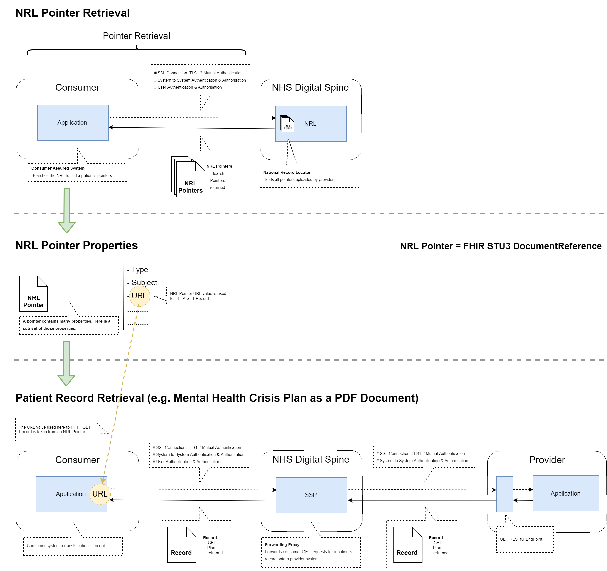

NHS North West Genomics
0.2.2 - ci-build

NHS North West Genomics
0.2.2 - ci-build

NHS North West Genomics, published by NHS North West Genomics. This guide is not an authorized publication; it is the continuous build for version 0.2.2 built by the FHIR (HL7® FHIR® Standard) CI Build. This version is based on the current content of https://github.com/nw-gmsa/nw-gmsa.github.com/ and changes regularly. See the Directory of published versions
graph LR
consumer((Data Consumer))
subgraph APIGateway[API Gateway]
enc[Encryption]
rate[Rate Limiting]
id[Identification and Authentication]
end
subgraph DataPlatform[Data Platform]
auth[Access Control and Authorisation]
audit1[Audit Logging]
consent[Patient Consent]
data[Data Security]
api[(Genomic Data Repository<br/>FHIR Repository)]
end
consumer --> |request| APIGateway
enc --> rate
rate --> id
APIGateway --> DataPlatform
audit1 --> auth
auth --> data
data --> consent
consent --> api
sequenceDiagram
participant consumer as Data Consumer
participant enc as Encryption
participant rate as Rate Limiting
participant id as Identification and Authentication
participant auth as Access Control and Authorisation
participant audit1 as Audit Logging
participant api as FHIR Repository
consumer ->> enc: Request
enc ->> rate: Request
alt Ok
rate ->> id: Request <br/> (authentication is a separate process)
alt Ok
id ->> auth: Request
alt Ok
auth ->> audit1: Request
audit1 ->> api: Request
api -->> audit1: Response
audit1 -->> consumer: Response
else Issue
auth -->> consumer : 403 Forbidden error
end
else Issue
id -->> consumer : 401 Unauthorized error
end
else Issue
rate -->> consumer: 503 Service Unavailable error
end
| Transport level integration | Requirement |
|---|---|
| Protocols | TLS 1.2 is the minimum; TLS 1.3 is recommended. |
| Prohibitions | TLS 1.0, 1.1, and SSL are forbidden. |
| Authentication | Mutual authentication (TLS-MA) is frequently required for API interactions. Note NHS England APIM recommends using Signed JWT Authentication. |
| Ciphers | TLS_AES_256_GCM_SHA384 |
| Mutual Authentication | MUST only accept client certificates issued by the NHS England Digital Deployment Issue and Resolution (DIR) team MUST only accept client certificates with a valid Spine ‘chain of trust’ (that is, linked to the Spine SubCA and RootCA) MUST only accept client certificates which have not expired or been revoked |
| Content compression | MUST support GZIP compression |
| Transfer encoding | MUST support chunked transfer encoding |
TODO
Only system-to-system identification is currently supported. NHS England identification:
Is based on IHE Internet User Authorization (IUA) but using client-credentials grant only (at present).
The authorisation will be hosted on the Regional Orchestration Engine. This is responsible for maintaining all the clients for the region.
Any Trust Integration can act as the Authorisation Client or Resource Server in the diagram below.
OAuth2 - Client Credentials Grant
Access Token, the request uses basic authentication using the client id as username and client secret as the password.Access Token (authorisation = Bearer {accessToken})See also NHS England Security and authorisation
FHIR Resource Scopes are used to define the permissions a client has to access a FHIR resource. See SMART - App Launch: Scopes and Launch Context
See IHE Basic Audit Log Patterns (BALP)
graph TD;
creator[Audit Creator]
repository[(Audit repository)]
consumer[Audit Consumer]
creator --> |"Record Audit Event [ITI-20]"| repository
consumer --> |"Retrieve ATNA Audit Event [ITI-81]"| repository
TODO See IHE Privacy Consent on FHIR (PCF)
All interactions must conform to this Implementation Guide, details on testing and validation are available in the Testing section.
Based on National Record Locator - FHIR API v3 - Producer and SSP Retrieval

| SSP | Description | NW FHIR AuditEvent | Http Header |
|---|---|---|---|
| Ssp-TraceID | Consumer’s TraceID - a unique identifier provided by the consumer (i.e. GUID/UUID). | entity[transaction] | X-Request-ID |
| Ssp-From | Consumer’s ASID | agent[client].who (Device) | |
| Ssp-To | Provider’s ASID. | agent[server].who (Device) | |
| Ssp-InteractionID | Spine’s Interaction ID. The interaction ID for retrieving a record referenced in an NRL pointer is a fixed value, specific to the NRL service: urn:nhs:names:services:nrl:DocumentReference.content.read |
action (and?) | |
| HTTP Response Body (if the request failed) | outcomeDesc | ||
| HTTP Status Code | outcome | ||
| Response Datetime | recorded | ||
| HTTP Request URL | entity[restful] | ||
| ODS Code | agent[client] | ||
| Record version or equivalent | |||
| Request Datetime | recorded | ||
| Trace ID | entity[message] | X-Correlation-ID | |
| User ID | agent[user] |
Initial NW Genomics Design.
graph LR
consumer((Document Consumer))
registry["Document Registry<br/>National Record Locator (NRL)"]
SSP["Spine Security Proxy (SSP)"]
subgraph Platform
subgraph APIGateway[API Gateway]
PKI[Validation of PKI credentials]
end
subgraph DataPlatform[Data Platform]
auth[Access Control and Authorisation]
audit1[Audit Logging]
data[Data Security]
api[(Genomic Data Repository)]
end
end
consumer --> |Find Patient Patient Documents| registry
consumer --> |Retrieve Document| SSP
SSP --> APIGateway
APIGateway --> DataPlatform
auth --> audit1
audit1 --> data
data --> api
IG © 2024+ NHS North West Genomics. Package fhir.nwgenomics.nhs.uk#0.2.2 based on FHIR 4.0.1. Generated 2026-04-10
Links: Table of Contents |
QA Report
| New Issue | Issues
Version History |
 |
Propose a change
|
Propose a change